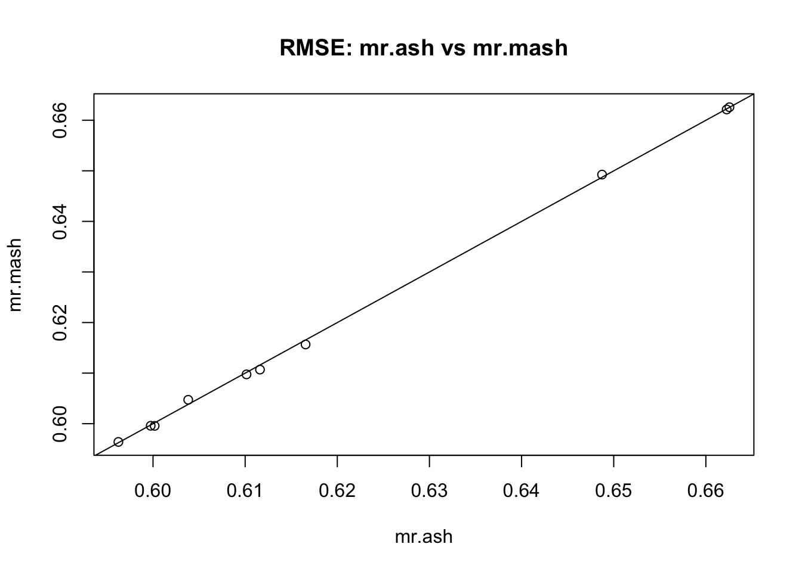
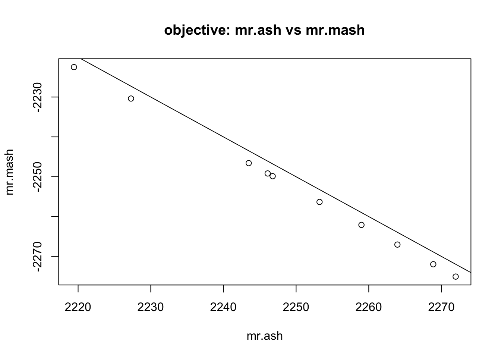
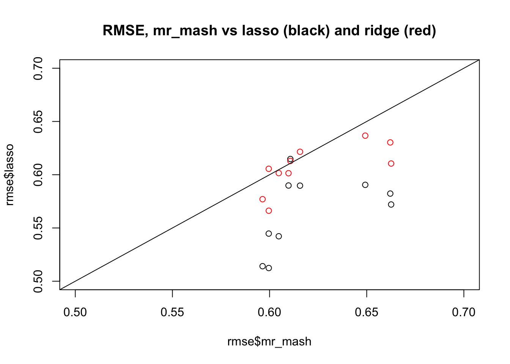
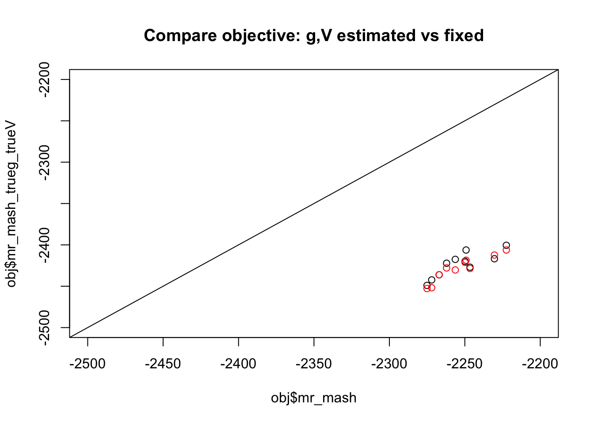

mr_ash_vs_lasso_02
Matthew Stephens
2020-06-22
Last updated: 2020-06-22
Checks: 7 0
Knit directory: misc/analysis/
This reproducible R Markdown analysis was created with workflowr (version 1.6.1). The Checks tab describes the reproducibility checks that were applied when the results were created. The Past versions tab lists the development history.
Great! Since the R Markdown file has been committed to the Git repository, you know the exact version of the code that produced these results.
Great job! The global environment was empty. Objects defined in the global environment can affect the analysis in your R Markdown file in unknown ways. For reproduciblity it’s best to always run the code in an empty environment.
The command set.seed(1) was run prior to running the code in the R Markdown file. Setting a seed ensures that any results that rely on randomness, e.g. subsampling or permutations, are reproducible.
Great job! Recording the operating system, R version, and package versions is critical for reproducibility.
Nice! There were no cached chunks for this analysis, so you can be confident that you successfully produced the results during this run.
Great job! Using relative paths to the files within your workflowr project makes it easier to run your code on other machines.
Great! You are using Git for version control. Tracking code development and connecting the code version to the results is critical for reproducibility.
The results in this page were generated with repository version ab27ea5. See the Past versions tab to see a history of the changes made to the R Markdown and HTML files.
Note that you need to be careful to ensure that all relevant files for the analysis have been committed to Git prior to generating the results (you can use wflow_publish or wflow_git_commit). workflowr only checks the R Markdown file, but you know if there are other scripts or data files that it depends on. Below is the status of the Git repository when the results were generated:
Ignored files:
Ignored: .DS_Store
Ignored: .Rhistory
Ignored: .Rproj.user/
Ignored: analysis/.RData
Ignored: analysis/.Rhistory
Ignored: analysis/ALStruct_cache/
Ignored: data/.Rhistory
Ignored: data/pbmc/
Untracked files:
Untracked: .dropbox
Untracked: Icon
Untracked: analysis/GHstan.Rmd
Untracked: analysis/GTEX-cogaps.Rmd
Untracked: analysis/PACS.Rmd
Untracked: analysis/Rplot.png
Untracked: analysis/SPCAvRP.rmd
Untracked: analysis/admm_02.Rmd
Untracked: analysis/admm_03.Rmd
Untracked: analysis/compare-transformed-models.Rmd
Untracked: analysis/cormotif.Rmd
Untracked: analysis/cp_ash.Rmd
Untracked: analysis/eQTL.perm.rand.pdf
Untracked: analysis/eb_prepilot.Rmd
Untracked: analysis/eb_var.Rmd
Untracked: analysis/ebpmf1.Rmd
Untracked: analysis/flash_test_tree.Rmd
Untracked: analysis/ieQTL.perm.rand.pdf
Untracked: analysis/m6amash.Rmd
Untracked: analysis/mash_bhat_z.Rmd
Untracked: analysis/mash_ieqtl_permutations.Rmd
Untracked: analysis/mixsqp.Rmd
Untracked: analysis/mr.ash_lasso_init.Rmd
Untracked: analysis/mr.mash.test.Rmd
Untracked: analysis/mr_ash_modular.Rmd
Untracked: analysis/mr_ash_parameterization.Rmd
Untracked: analysis/mr_ash_pen.Rmd
Untracked: analysis/nejm.Rmd
Untracked: analysis/normalize.Rmd
Untracked: analysis/pbmc.Rmd
Untracked: analysis/poisson_transform.Rmd
Untracked: analysis/pseudodata.Rmd
Untracked: analysis/qrnotes.txt
Untracked: analysis/ridge_iterative_02.Rmd
Untracked: analysis/ridge_iterative_splitting.Rmd
Untracked: analysis/samps/
Untracked: analysis/sc_bimodal.Rmd
Untracked: analysis/shrinkage_comparisons_changepoints.Rmd
Untracked: analysis/susie_en.Rmd
Untracked: analysis/susie_z_investigate.Rmd
Untracked: analysis/svd-timing.Rmd
Untracked: analysis/temp.RDS
Untracked: analysis/temp.Rmd
Untracked: analysis/test-figure/
Untracked: analysis/test.Rmd
Untracked: analysis/test.Rpres
Untracked: analysis/test.md
Untracked: analysis/test_qr.R
Untracked: analysis/test_sparse.Rmd
Untracked: analysis/z.txt
Untracked: code/multivariate_testfuncs.R
Untracked: code/rqb.hacked.R
Untracked: data/4matthew/
Untracked: data/4matthew2/
Untracked: data/E-MTAB-2805.processed.1/
Untracked: data/ENSG00000156738.Sim_Y2.RDS
Untracked: data/GDS5363_full.soft.gz
Untracked: data/GSE41265_allGenesTPM.txt
Untracked: data/Muscle_Skeletal.ACTN3.pm1Mb.RDS
Untracked: data/Thyroid.FMO2.pm1Mb.RDS
Untracked: data/bmass.HaemgenRBC2016.MAF01.Vs2.MergedDataSources.200kRanSubset.ChrBPMAFMarkerZScores.vs1.txt.gz
Untracked: data/bmass.HaemgenRBC2016.Vs2.NewSNPs.ZScores.hclust.vs1.txt
Untracked: data/bmass.HaemgenRBC2016.Vs2.PreviousSNPs.ZScores.hclust.vs1.txt
Untracked: data/eb_prepilot/
Untracked: data/finemap_data/fmo2.sim/b.txt
Untracked: data/finemap_data/fmo2.sim/dap_out.txt
Untracked: data/finemap_data/fmo2.sim/dap_out2.txt
Untracked: data/finemap_data/fmo2.sim/dap_out2_snp.txt
Untracked: data/finemap_data/fmo2.sim/dap_out_snp.txt
Untracked: data/finemap_data/fmo2.sim/data
Untracked: data/finemap_data/fmo2.sim/fmo2.sim.config
Untracked: data/finemap_data/fmo2.sim/fmo2.sim.k
Untracked: data/finemap_data/fmo2.sim/fmo2.sim.k4.config
Untracked: data/finemap_data/fmo2.sim/fmo2.sim.k4.snp
Untracked: data/finemap_data/fmo2.sim/fmo2.sim.ld
Untracked: data/finemap_data/fmo2.sim/fmo2.sim.snp
Untracked: data/finemap_data/fmo2.sim/fmo2.sim.z
Untracked: data/finemap_data/fmo2.sim/pos.txt
Untracked: data/logm.csv
Untracked: data/m.cd.RDS
Untracked: data/m.cdu.old.RDS
Untracked: data/m.new.cd.RDS
Untracked: data/m.old.cd.RDS
Untracked: data/mainbib.bib.old
Untracked: data/mat.csv
Untracked: data/mat.txt
Untracked: data/mat_new.csv
Untracked: data/matrix_lik.rds
Untracked: data/paintor_data/
Untracked: data/temp.txt
Untracked: data/y.txt
Untracked: data/y_f.txt
Untracked: data/zscore_jointLCLs_m6AQTLs_susie_eQTLpruned.rds
Untracked: data/zscore_jointLCLs_random.rds
Untracked: explore_udi.R
Untracked: output/fit.k10.rds
Untracked: output/fit.varbvs.RDS
Untracked: output/glmnet.fit.RDS
Untracked: output/test.bv.txt
Untracked: output/test.gamma.txt
Untracked: output/test.hyp.txt
Untracked: output/test.log.txt
Untracked: output/test.param.txt
Untracked: output/test2.bv.txt
Untracked: output/test2.gamma.txt
Untracked: output/test2.hyp.txt
Untracked: output/test2.log.txt
Untracked: output/test2.param.txt
Untracked: output/test3.bv.txt
Untracked: output/test3.gamma.txt
Untracked: output/test3.hyp.txt
Untracked: output/test3.log.txt
Untracked: output/test3.param.txt
Untracked: output/test4.bv.txt
Untracked: output/test4.gamma.txt
Untracked: output/test4.hyp.txt
Untracked: output/test4.log.txt
Untracked: output/test4.param.txt
Untracked: output/test5.bv.txt
Untracked: output/test5.gamma.txt
Untracked: output/test5.hyp.txt
Untracked: output/test5.log.txt
Untracked: output/test5.param.txt
Unstaged changes:
Modified: analysis/ash_delta_operator.Rmd
Modified: analysis/ash_pois_bcell.Rmd
Modified: analysis/lasso_em.Rmd
Modified: analysis/minque.Rmd
Modified: analysis/mr_missing_data.Rmd
Note that any generated files, e.g. HTML, png, CSS, etc., are not included in this status report because it is ok for generated content to have uncommitted changes.
These are the previous versions of the repository in which changes were made to the R Markdown (analysis/mr_ash_vs_lasso_02.Rmd) and HTML (docs/mr_ash_vs_lasso_02.html) files. If you’ve configured a remote Git repository (see ?wflow_git_remote), click on the hyperlinks in the table below to view the files as they were in that past version.
| File | Version | Author | Date | Message |
|---|---|---|---|---|
| Rmd | ab27ea5 | Matthew Stephens | 2020-06-22 | workflowr::wflow_publish(“mr_ash_vs_lasso_02.Rmd”) |
library("mr.ash.alpha")
library("mr.mash.alpha")
library("glmnet")Loading required package: MatrixLoaded glmnet 3.0-2Introduction
This is a follow-up to my previous investigation where it looks like mr.ash may have convergence issues on cases with dense variables and high PVE.
Here I want to try to check that this really is a convergence issue by checking the objective function from different initialization strategies. I use the mr.mash implementation here since we believe it computes objective correctly even when prior is fixed, which at time of writing was not true for mr.ash.
I run mr.mash in different ways:
- Initialized just b from lasso solution
- Fix g and V to true g and true V, init from lasso solution.
- Fix g and V to true g and true V, init from true b
set.seed(123)
n <- 500
p <- 1000
p_causal <- 500 # number of causal variables (simulated effects N(0,1))
pve <- 0.95
nrep = 10
rmse = list(mr_mash=rep(0,nrep),lasso = rep(0,nrep),ridge=rep(0,nrep),mr_ash=rep(0,nrep))
obj = list(mr_mash=rep(0,nrep),lasso = rep(0,nrep),ridge=rep(0,nrep),mr_ash=rep(0,nrep))
for(i in 1:nrep){
sim=list()
sim$X = matrix(rnorm(n*p,sd=1),nrow=n)
B <- rep(0,p)
causal_variables <- sample(x=(1:p), size=p_causal)
B[causal_variables] <- rnorm(n=p_causal, mean=0, sd=1)
sim$B = B
sim$Y = sim$X %*% sim$B
E = rnorm(n,sd = sqrt((1-pve)/(pve))*sd(sim$Y))
sim$Y = sim$Y + E
sim$E = E
fit_lasso <- cv.glmnet(x=sim$X, y=sim$Y, family="gaussian", alpha=1, standardize=FALSE)
fit_ridge <- cv.glmnet(x=sim$X, y=sim$Y, family="gaussian", alpha=0, standardize=FALSE)
fit_mrash <- mr.ash.alpha::mr.ash(sim$X, sim$Y, beta.init=coef(fit_lasso)[-1], standardize = FALSE)
###Fit mr.mash univariate
grid <- fit_mrash$data$sa2 * fit_mrash$sigma2
s0 <- vector("list", length(grid)+1)
for(j in 1:(length(grid)+1)){
s0[[j]] <- matrix(c(0, grid)[j], ncol=1, nrow=1)
}
fit_mrmash <- mr.mash(sim$X, cbind(sim$Y), s0, tol=1e-8, convergence_criterion="ELBO", update_w0=TRUE,
update_w0_method="EM", compute_ELBO=TRUE, standardize=FALSE, verbose=FALSE, update_V=TRUE,
mu1_init=matrix(coef(fit_lasso)[-1], nrow=p, ncol=1), w0_threshold=0)
###Fit mr.mash univariate using true g etc
s2 = (sqrt((1-pve)/(pve))*sd(sim$Y))^2
grid = c(1)
s0 <- vector("list", length(grid)+1)
for(j in 1:(length(grid)+1)){
s0[[j]] <- matrix(c(0, grid)[j], ncol=1, nrow=1)
}
fit_mrmash_trueg_trueV <- mr.mash(sim$X, cbind(sim$Y), s0, w0 = c(0.5,0.5), V=matrix(s2,nrow=1,ncol=1),tol=1e-8, convergence_criterion="ELBO", update_w0=FALSE, compute_ELBO=TRUE, standardize=FALSE, verbose=FALSE, update_V=FALSE,mu1_init=matrix(coef(fit_lasso)[-1], nrow=p, ncol=1), w0_threshold=0)
fit_mrmash_trueg_trueV_trueb <- mr.mash(sim$X, cbind(sim$Y), s0, w0 = c(0.5,0.5), V=matrix(s2,nrow=1,ncol=1),tol=1e-8, convergence_criterion="ELBO", update_w0=FALSE, compute_ELBO=TRUE, standardize=FALSE, verbose=FALSE, update_V=FALSE,mu1_init=matrix(sim$B, nrow=p, ncol=1), w0_threshold=0)
rmse$mr_ash[i] = sqrt(mean((sim$B-fit_mrash$beta)^2))
rmse$mr_mash[i] = sqrt(mean((sim$B-fit_mrmash$mu1)^2))
rmse$lasso[i] = sqrt(mean((sim$B-coef(fit_lasso)[-1])^2))
rmse$ridge[i] = sqrt(mean((sim$B-coef(fit_ridge)[-1])^2))
rmse$mr_mash_trueg_trueV[i] = sqrt(mean((sim$B-fit_mrmash_trueg_trueV$mu1)^2))
rmse$mr_mash_trueg_trueV_trueb[i] = sqrt(mean((sim$B-fit_mrmash_trueg_trueV_trueb$mu1)^2))
obj$mr_ash[i] = min(fit_mrash$varobj)
obj$mr_mash[i] = fit_mrmash$ELBO
obj$mr_mash_trueg_trueV[i] = fit_mrmash_trueg_trueV$ELBO
obj$mr_mash_trueg_trueV_trueb[i] = fit_mrmash_trueg_trueV_trueb$ELBO
}Processing the inputs... Done!
Fitting the optimization algorithm... Warning in mr.mash(sim$X, cbind(sim$Y), s0, tol = 1e-08, convergence_criterion =
"ELBO", : Max number of iterations reached. Try increasing max_iter.Done!
Processing the outputs... Done!
mr.mash successfully executed in 2.578538 minutes!
Processing the inputs... Done!
Fitting the optimization algorithm... Done!
Processing the outputs... Done!
mr.mash successfully executed in 0.05164425 minutes!
Processing the inputs... Done!
Fitting the optimization algorithm... Done!
Processing the outputs... Done!
mr.mash successfully executed in 0.0471382 minutes!
Processing the inputs... Done!
Fitting the optimization algorithm... Done!
Processing the outputs... Done!
mr.mash successfully executed in 0.7961215 minutes!
Processing the inputs... Done!
Fitting the optimization algorithm... Done!
Processing the outputs... Done!
mr.mash successfully executed in 0.08116435 minutes!
Processing the inputs... Done!
Fitting the optimization algorithm... Done!
Processing the outputs... Done!
mr.mash successfully executed in 0.0643537 minutes!
Processing the inputs... Done!
Fitting the optimization algorithm... Done!
Processing the outputs... Done!
mr.mash successfully executed in 0.6335215 minutes!
Processing the inputs... Done!
Fitting the optimization algorithm... Done!
Processing the outputs... Done!
mr.mash successfully executed in 0.02547878 minutes!
Processing the inputs... Done!
Fitting the optimization algorithm... Done!
Processing the outputs... Done!
mr.mash successfully executed in 0.1214223 minutes!
Processing the inputs... Done!
Fitting the optimization algorithm... Done!
Processing the outputs... Done!
mr.mash successfully executed in 0.5469612 minutes!
Processing the inputs... Done!
Fitting the optimization algorithm... Done!
Processing the outputs... Done!
mr.mash successfully executed in 0.04372758 minutes!
Processing the inputs... Done!
Fitting the optimization algorithm... Done!
Processing the outputs... Done!
mr.mash successfully executed in 0.03614767 minutes!
Processing the inputs... Done!
Fitting the optimization algorithm... Done!
Processing the outputs... Done!
mr.mash successfully executed in 4.325116 minutes!
Processing the inputs... Done!
Fitting the optimization algorithm... Done!
Processing the outputs... Done!
mr.mash successfully executed in 0.04260196 minutes!
Processing the inputs... Done!
Fitting the optimization algorithm... Done!
Processing the outputs... Done!
mr.mash successfully executed in 0.07787605 minutes!
Processing the inputs... Done!
Fitting the optimization algorithm... Done!
Processing the outputs... Done!
mr.mash successfully executed in 1.300966 minutes!
Processing the inputs... Done!
Fitting the optimization algorithm... Done!
Processing the outputs... Done!
mr.mash successfully executed in 0.09525143 minutes!
Processing the inputs... Done!
Fitting the optimization algorithm... Done!
Processing the outputs... Done!
mr.mash successfully executed in 0.05856572 minutes!
Processing the inputs... Done!
Fitting the optimization algorithm... Done!
Processing the outputs... Done!
mr.mash successfully executed in 0.3751264 minutes!
Processing the inputs... Done!
Fitting the optimization algorithm... Done!
Processing the outputs... Done!
mr.mash successfully executed in 0.05095466 minutes!
Processing the inputs... Done!
Fitting the optimization algorithm... Done!
Processing the outputs... Done!
mr.mash successfully executed in 0.03649112 minutes!
Processing the inputs... Done!
Fitting the optimization algorithm... Done!
Processing the outputs... Done!
mr.mash successfully executed in 0.7178551 minutes!
Processing the inputs... Done!
Fitting the optimization algorithm... Done!
Processing the outputs... Done!
mr.mash successfully executed in 0.1201826 minutes!
Processing the inputs... Done!
Fitting the optimization algorithm... Done!
Processing the outputs... Done!
mr.mash successfully executed in 0.04481213 minutes!
Processing the inputs... Done!
Fitting the optimization algorithm... Done!
Processing the outputs... Done!
mr.mash successfully executed in 1.549341 minutes!
Processing the inputs... Done!
Fitting the optimization algorithm... Done!
Processing the outputs... Done!
mr.mash successfully executed in 0.0491016 minutes!
Processing the inputs... Done!
Fitting the optimization algorithm... Done!
Processing the outputs... Done!
mr.mash successfully executed in 0.03226667 minutes!
Processing the inputs... Done!
Fitting the optimization algorithm... Done!
Processing the outputs... Done!
mr.mash successfully executed in 0.729257 minutes!
Processing the inputs... Done!
Fitting the optimization algorithm... Done!
Processing the outputs... Done!
mr.mash successfully executed in 0.06203053 minutes!
Processing the inputs... Done!
Fitting the optimization algorithm... Done!
Processing the outputs... Done!
mr.mash successfully executed in 0.1128932 minutes!mr.mash vs mr.ash
First compare RMSE and objective of mr.ash vs mr.mash from default settings (same grid for both). Note the obective in mr.ash is the negative ELBO.
plot(rmse$mr_ash,rmse$mr_mash, main="RMSE: mr.ash vs mr.mash", ylab="mr.mash", xlab="mr.ash")
abline(a=0,b=1)
plot(obj$mr_ash,obj$mr_mash, main="objective: mr.ash vs mr.mash", ylab="mr.mash", xlab="mr.ash")
abline(a=0,b=-1)
mr.mash vs ridge/lasso
Now compare RMSE against lasso and ridge; as we know lasso is better here.
plot(rmse$mr_mash,rmse$lasso, xlim=c(0.5,0.7), ylim=c(0.5,0.7), main="RMSE, mr_mash vs lasso (black) and ridge (red)")
points(rmse$mr_mash,rmse$ridge,col=2)
abline(a=0,b=1)
mr.mash objective with true g and true V
Now compare objective with default initialization vs fix g and V to true values. We see the objective is consistently better when g and V are estimated. (Red shows initialization from true b)
plot(obj$mr_mash,obj$mr_mash_trueg_trueV, xlim=c(-2500,-2200),ylim=c(-2500,-2200), main="Compare objective: g,V estimated vs fixed")
points(obj$mr_mash,obj$mr_mash_trueg_trueV_trueb, col=2)
abline(a=0,b=1)
mr.mash objective with true g and true V
Now compare rmse. We confirm the rmse performance is better for true (g,V), as it should be. But, of course, this is cheating…
plot(rmse$mr_mash,rmse$mr_mash_trueg_trueV,xlim=c(0.5,0.7),ylim=c(0.5,0.7))
points(rmse$mr_mash,rmse$mr_mash_trueg_trueV_trueb, col=2)
abline(a=0,b=1)
My explanation for this behaviour is that the gap between the variational approximation and true posterior is smaller for (g,V) that correspond to less signal. So it tends to favor a solution with less signal than it should.
sessionInfo()R version 3.6.0 (2019-04-26)
Platform: x86_64-apple-darwin15.6.0 (64-bit)
Running under: macOS Mojave 10.14.6
Matrix products: default
BLAS: /Library/Frameworks/R.framework/Versions/3.6/Resources/lib/libRblas.0.dylib
LAPACK: /Library/Frameworks/R.framework/Versions/3.6/Resources/lib/libRlapack.dylib
locale:
[1] en_US.UTF-8/en_US.UTF-8/en_US.UTF-8/C/en_US.UTF-8/en_US.UTF-8
attached base packages:
[1] stats graphics grDevices utils datasets methods base
other attached packages:
[1] glmnet_3.0-2 Matrix_1.2-18 mr.mash.alpha_0.1-79
[4] mr.ash.alpha_0.1-34
loaded via a namespace (and not attached):
[1] MBSP_1.0 Rcpp_1.0.4.6 compiler_3.6.0 later_1.0.0
[5] git2r_0.26.1 workflowr_1.6.1 iterators_1.0.12 tools_3.6.0
[9] digest_0.6.25 evaluate_0.14 lattice_0.20-40 GIGrvg_0.5
[13] rlang_0.4.5 foreach_1.4.8 yaml_2.2.1 mvtnorm_1.1-1
[17] SparseM_1.78 xfun_0.12 coda_0.19-3 stringr_1.4.0
[21] knitr_1.28 fs_1.3.2 MatrixModels_0.4-1 rprojroot_1.3-2
[25] grid_3.6.0 glue_1.4.0 R6_2.4.1 rmarkdown_2.1
[29] mixsqp_0.3-43 irlba_2.3.3 magrittr_1.5 whisker_0.4
[33] codetools_0.2-16 backports_1.1.5 promises_1.1.0 htmltools_0.4.0
[37] matrixStats_0.56.0 mcmc_0.9-7 MASS_7.3-51.5 shape_1.4.4
[41] httpuv_1.5.2 quantreg_5.54 stringi_1.4.6 MCMCpack_1.4-8